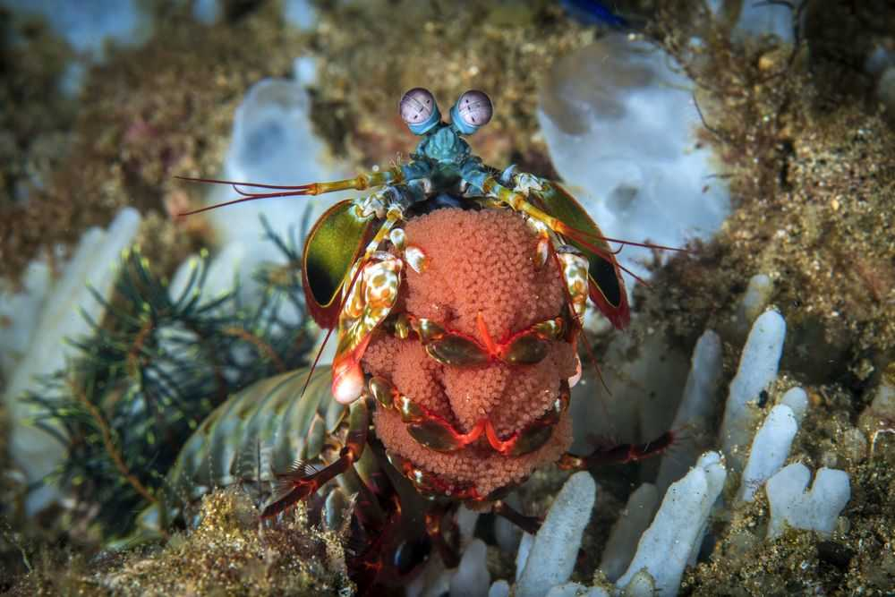

Fatos sobre o Stomatopoda
- As garras do camarão mantis são sua característica mais distinta.
- Estomatopodes têm a visão mais complexa no reino animal, excedendo até a das borboletas.
- Camarões Mantis são altamente inteligentes.
Quem é?
- Nome científico: Stomatopoda (por exemplo, Odontodactylus scyllarus)
- Outros nomes: Stomatopod, gafanhoto do mar, separador de polegar, matador de camarão
- Características distintas: Olhos montados em caules móveis que podem se mover independentemente um do outro
- Tamanho médio: 10 centímetros (3,9 pol.)
- Dieta: Carnívoro
- Vida útil: 20 anos
- Habitat: Ambientes marinhos tropicais e subtropicais rasos
- Estado de conservação: Não avaliado
- Reino: Animalia
- Filo: Arthropoda
- Subfilo: Crustáceos
- Classe: Malacostraca
- Subclasse:Hoplocarida
- Ordem: Stomatopoda
- Fato engraçado: Um ataque de uma garra de camarão mantis é tão forte que pode quebrar o vidro do aquário.
As garras do camarão mantis são sua característica mais distinta.
Dependendo da espécie, o segundo par de apêndices, conhecido como garras do raptor, atua como clavas ou lanças. O camarão mantis pode usar suas garras para espancar ou esfaquear presas
Estomatopodes têm a visão mais complexa no reino animal, excedendo até a das borboletas.
O camarão mantis tem olhos compostos montados em caules e pode girá-los independentemente um do outro para examinar seus arredores. Enquanto os humanos têm três tipos de fotorreceptores, os olhos de um camarão mantis têm entre 12 e 16 tipos de células fotorreceptoras. Algumas espécies podem até ajustar a sensibilidade de sua visão de cores.

Camarões Mantis são altamente inteligentes.
Reconhecem e lembram-se de outras pessoas pela visão e pelo cheiro, e demonstram capacidade de aprender. Os animais têm um comportamento social complexo, que inclui brigas ritualizadas e atividades coordenadas entre membros de um par monogâmico. Eles usam padrões fluorescentes para sinalizar entre si e possivelmente outras espécies